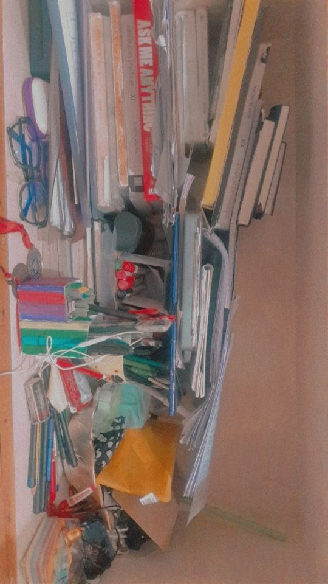
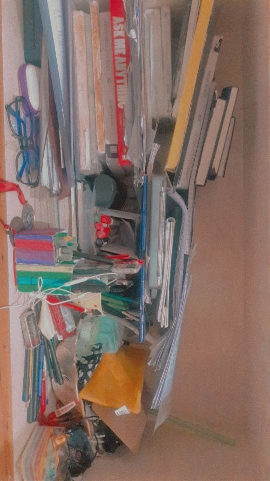

Since human beings in general wont do soemthing necessary when they dont see the importance of it, I'm going to now tell you why you need to maintain individual cleanliness.
before you skip this, why? reading this will help you increase the drive to stay clean, even if you already know the reasons, revise so that it stays with you.
EFFECTS OF UNTIDINESS ON PHYSICAL HEALTH & MENTAL HEALTH
- Having an untidy or dirty room or living space, can trigger allegries which could have an adverse effect on mental health by promoting avoidable stress.
- Diseases like typhoid, hepaptitis and dengue can be mostly avoided by regularly sanitizing and maintaining an attentively clean environment.
- Eating healthy and clean is also a part of individual cleanliness, we can drastically reduce the spread of diseases like Jaundice, Cholera, Ascariasis, Leptospirosis, Ringworm and many others by just eating and drinking non- contaminated water and living in hygienic conditions.
- It also has various effects on inducing motivation, according to just household observation we can see that children or adults working in a messy enivronment tend to have lesser drive or motivation to work ad working less or not having the mood will adversely affect their mental health again as they feel lazy and incompendent due to the environment.
- the relaxed, nice feeling, the motivation and the confidence all depends on the environment the person spends time and grows up in. I think we must all know that the envirnoment hugely affects the productivity and happiness of a person and certain designs and colors have have experimentally proved to calm or improve the mood of the person, the point here is that an effective lifestye requires a tidy and neat environment

- Having an untidy or dirty room or living space, can trigger allegries which could have an adverse effect on mental health by promoting avoidable stress.
- Diseases like typhoid, hepaptitis and dengue can be mostly avoided by regularly sanitizing and maintaining an attentively clean environment.
- Eating healthy and clean is also a part of individual cleanliness, we can drastically reduce the spread of diseases like Jaundice, Cholera, Ascariasis, Leptospirosis, Ringworm and many others by just eating and drinking non- contaminated water and living in hygienic conditions.
- It also has various effects on inducing motivation, according to just household observation we can see that children or adults working in a messy enivronment tend to have lesser drive or motivation to work ad working less or not having the mood will adversely affect their mental health again as they feel lazy and incompendent due to the environment.
- the relaxed, nice feeling, the motivation and the confidence all depends on the environment the person spends time and grows up in. I think we must all know that the envirnoment hugely affects the productivity and happiness of a person and certain designs and colors have have experimentally proved to calm or improve the mood of the person, the point here is that an effective lifestye requires a tidy and neat environment 